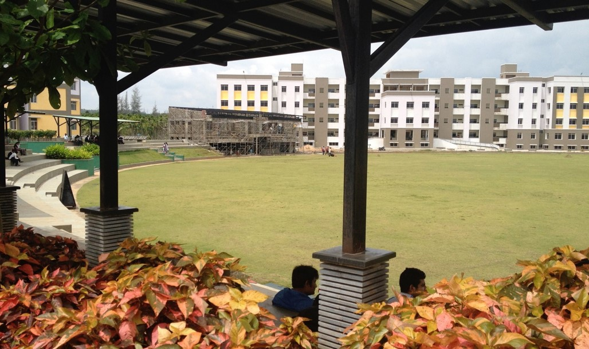
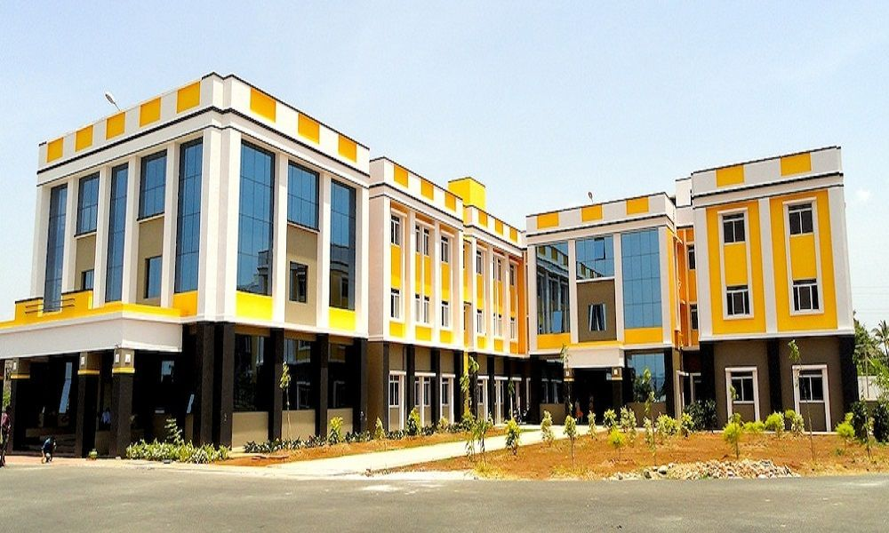
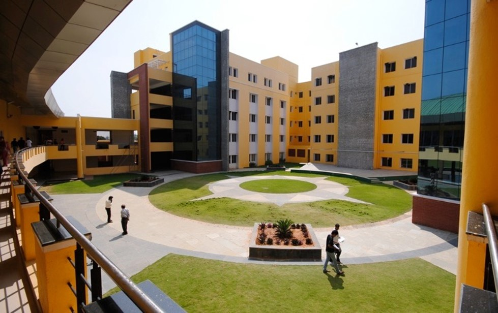
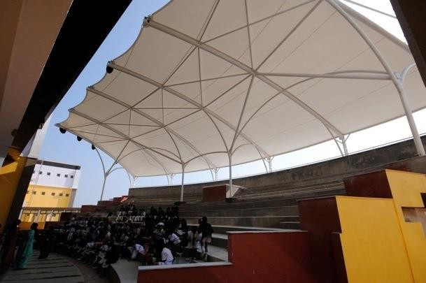
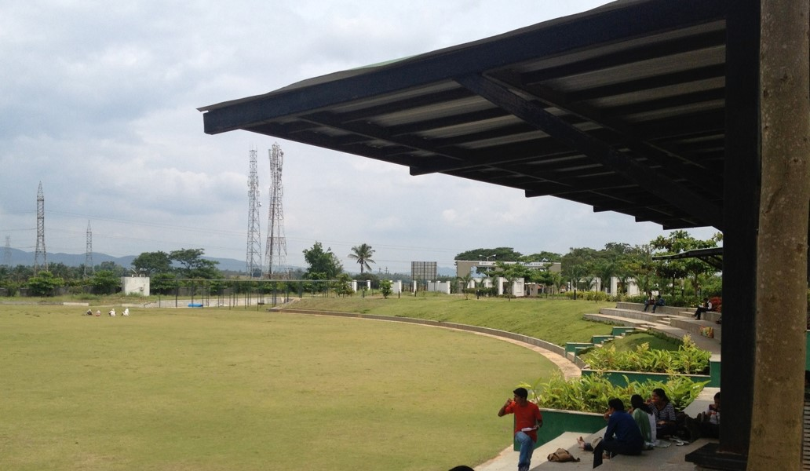
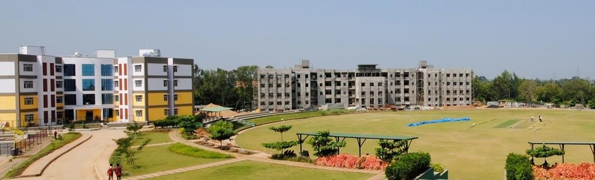
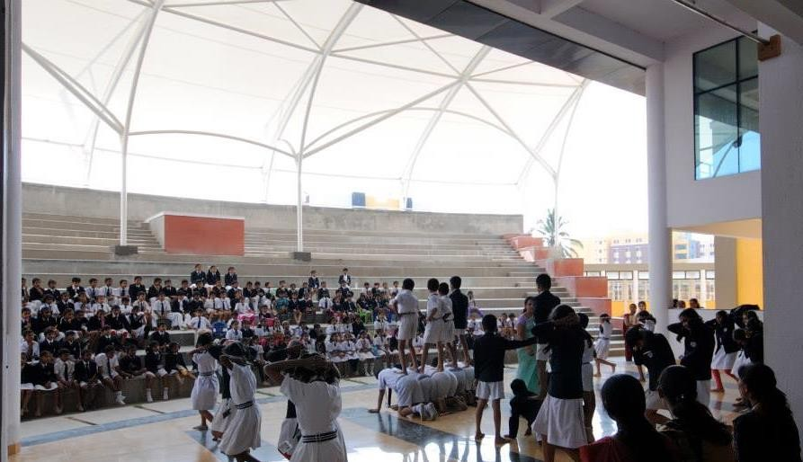
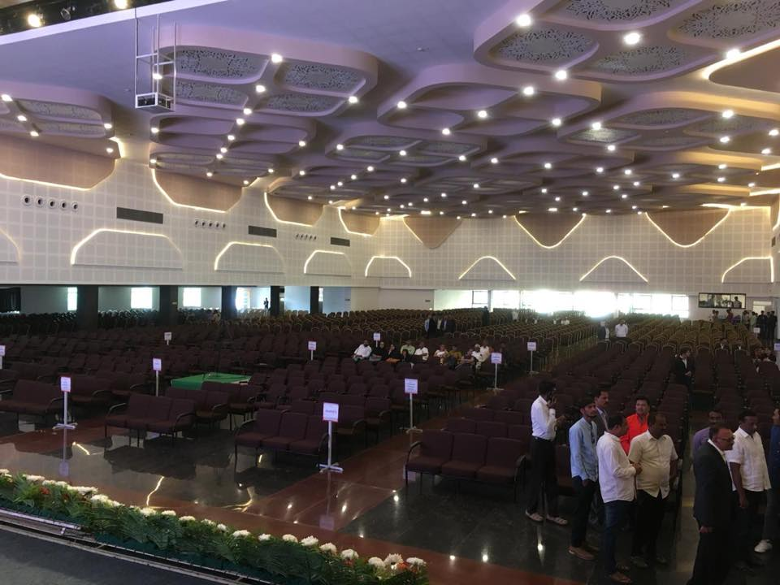

PES Group of Institutions

Overview
The PES campus in Shimoga is a 50-acre masterplan that brings several institutions together on one site: an engineering college, a K-12 school, extensive sports facilities, two residential blocks, an auditorium, and private spaces for the client's own meetings. With a built-up area of around six lakh square feet, the campus serves some 4,500 people. It is one of the most ambitious masterplans we have undertaken, and the start of a long relationship with the PES group that later led to Amaatra Academy in Bangalore.
Designing a campus like this is less like designing a building and more like planning a small town. Each institution has its own users, rhythms and needs. An engineering college has lecture halls, laboratories and workshops, and students who are young adults. A school has classrooms and play areas for much younger children. Residential blocks need privacy and quiet; sports facilities need space and access; an auditorium has to receive large audiences, sometimes from beyond the campus. The masterplan had to give each its own identity and setting while making the whole work as one place. Each institution was also built to the norms of its regulator: the engineering college, today the PES Institute of Technology and Management and affiliated to Visvesvaraya Technological University, to those of the All India Council for Technical Education, and the school to CBSE's affiliation norms.
We began by establishing a clear structure for the site: a framework of routes, open spaces and zones that organises the institutions and the movement between them. The school and the college each have their own precinct, so that younger children and older students work in settings suited to them. The residential blocks sit in quieter parts of the site, and the sports facilities are placed where they can be shared. Landscaped open space between these zones gives the campus its green, spacious character and lets light and air reach every building.
The masterplan was also designed to grow. Campuses of this scale are rarely built at once; they develop in phases as institutions expand and new needs arise. We planned PES so that each phase could be built without disrupting what was already there, and so that the campus would stay coherent at every stage. New buildings slot into the framework rather than being added wherever space allows.
Sport plays a major role in campus life. The extensive sports facilities support physical wellness and athletic development across the whole student body, from schoolchildren to college students, and give the campus shared places for activity and competition. The auditorium, technically equipped for performances and events, is a hub for the community, hosting everything from academic functions to cultural programmes and public gatherings.
The two residential facilities give students and faculty a comfortable home on campus. For a campus that draws students from across the region, good residential accommodation is essential, and we wanted these buildings to offer warmth and a sense of community rather than just a place to sleep. Alongside them, private areas provide dedicated space for the client's meetings and professional engagements.
Together, these elements make PES a complete educational environment, where students can move from early schooling through to higher education on one campus, supported by sport, culture and residential life. For us, the project showed the value of thinking at the scale of the masterplan: getting the big structure right first, so that each building, and each phase of growth, contributes to a campus that feels like a single, considered place.
Architects — Kumar & Swamy Architects, Bangalore








Planning a school or campus?
Tell us about your institution — a new campus, an extension, a master plan or a renovation. Every project starts with a conversation.